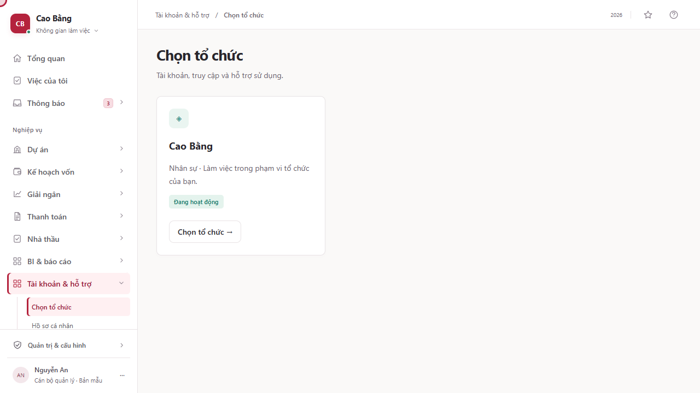
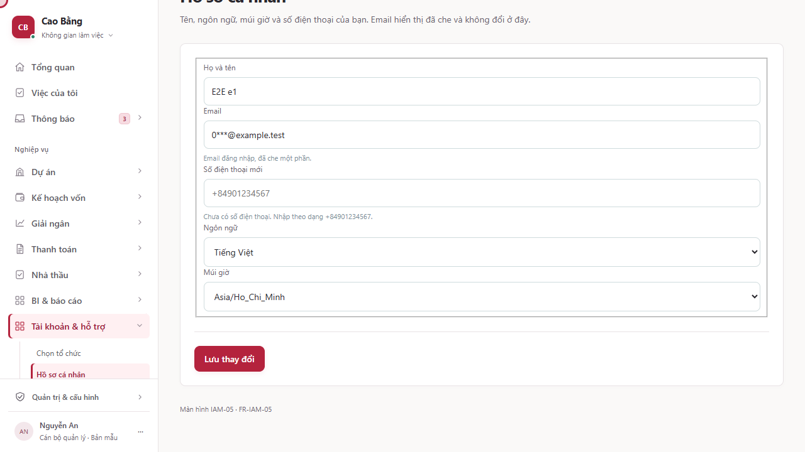
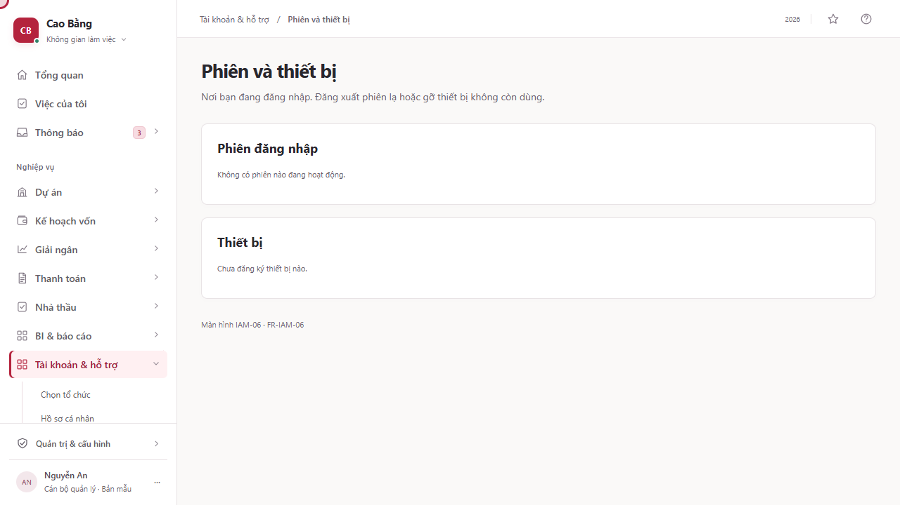
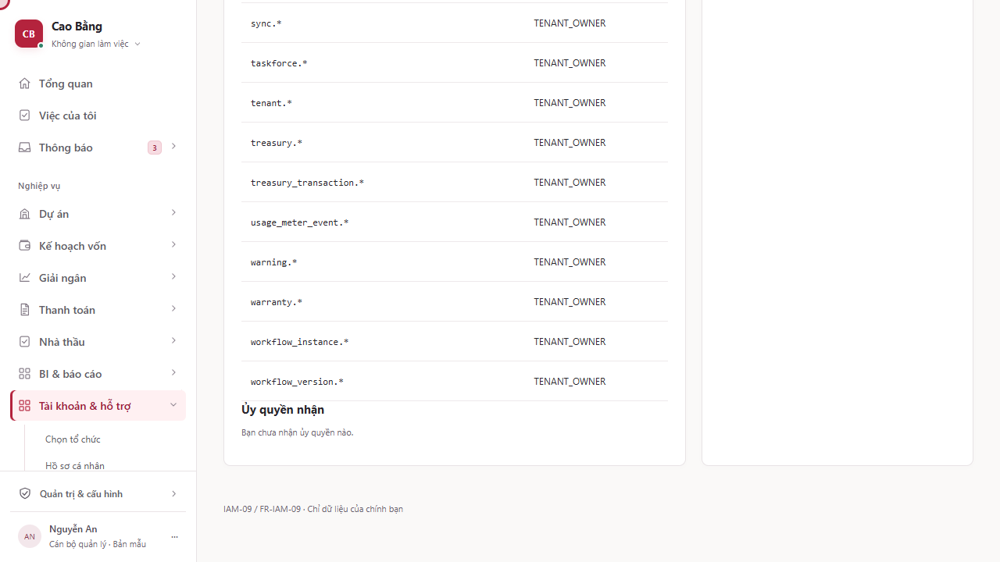

2Truy cập và cá nhân: Không gian cá nhân
Các bước trong clip (4)
-
1. Chọn tổ chức
Màn hình: IAM-04 · Chọn tổ chức
Chọn tổ chức. Đây là các thẻ thông tin, dành cho Tất cả người dùng (nhân sự, khách nhà thầu). Chỉ liệt kê membership Active của chính người dùng; selectTenantContext cấp token gắn tid/mid/scope_version; tenant Suspended hiển thị chế độ chỉ đọc; đổi tenant thu hồi token cũ và xóa dữ liệu cục bộ mobile. Trên màn hình có: Cao Bằng. Các thao tác chính: Chọn Cao Bằng. Lúc quay, màn hình đang có 1 dòng dữ liệu.
Thiết kế còn nêu các thông tin: Tenant, Đơn vị, Vai trò, Loại membership và Trạng thái tenant. Màn hình ở bản hiện tại chưa hiện các mục này bằng đúng tên đó.

-
2. Hồ sơ cá nhân
Màn hình: IAM-05 · Hồ sơ cá nhân
Hồ sơ cá nhân. Đây là biểu mẫu để nhập thông tin, dành cho Tất cả người dùng (nhân sự, khách nhà thầu). updateMyProfile bắt buộc If-Match; email do IdP quản lý; người dùng không tự sửa đơn vị/vai trò. Trên màn hình có: Email, Ngôn ngữ, Múi giờ và Số điện thoại. Các thao tác chính: Lưu thay đổi.
Thiết kế còn nêu các thông tin: Họ tên và Phiên bản. Màn hình ở bản hiện tại chưa hiện các mục này bằng đúng tên đó.

-
3. Phiên và thiết bị
Màn hình: IAM-06 · Phiên và thiết bị
Phiên và thiết bị. Đây là danh sách, dành cho Tất cả người dùng (nhân sự, khách nhà thầu). revokeMySession/revokeMyDevice có hiệu lực ≤60 giây (deny-list Redis + backchannel logout); gỡ thiết bị xóa push token. Trên màn hình có: Phiên đăng nhập và Thiết bị.
Thiết kế còn nêu các thông tin: Đăng nhập cuối, Trạng thái, Mức xác thực và Thu hồi phiên. Màn hình ở bản hiện tại chưa hiện các mục này bằng đúng tên đó.

-
4. Phạm vi quyền hiệu lực của tôi
Màn hình: IAM-09 · Phạm vi quyền hiệu lực của tôi
Phạm vi quyền hiệu lực của tôi. Đây là màn hình xem chi tiết, dành cho Tất cả người dùng (nhân sự, khách nhà thầu). getMyEffectiveAccess; hiển thị membership ∩ role/scope ∩ entitlement; không lộ grant của người khác. Trên màn hình có: Vai trò, Phạm vi, Hiệu lực, Ủy quyền nhận và Quyền lợi gói. Lúc quay, màn hình đang có 127 dòng dữ liệu.
